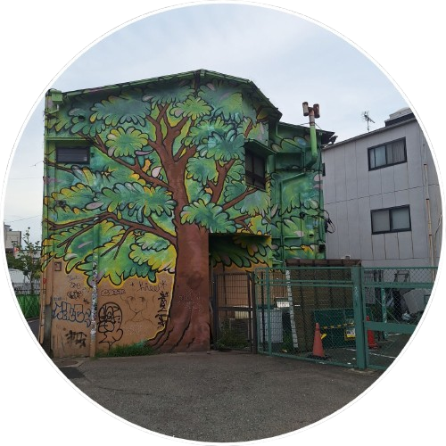

About Me

Hello! I'm Edwin Yeung, a passionate developer specializing in creating innovative solutions. I have a strong interest in game development, mobile applications, and web development.
With experience in various programming languages and technologies, I strive to deliver projects that not only meet but exceed expectations. I'm constantly learning and exploring new technologies to enhance my skill set.
Feel free to explore my projects and get in touch if you'd like to collaborate or learn more about my work.